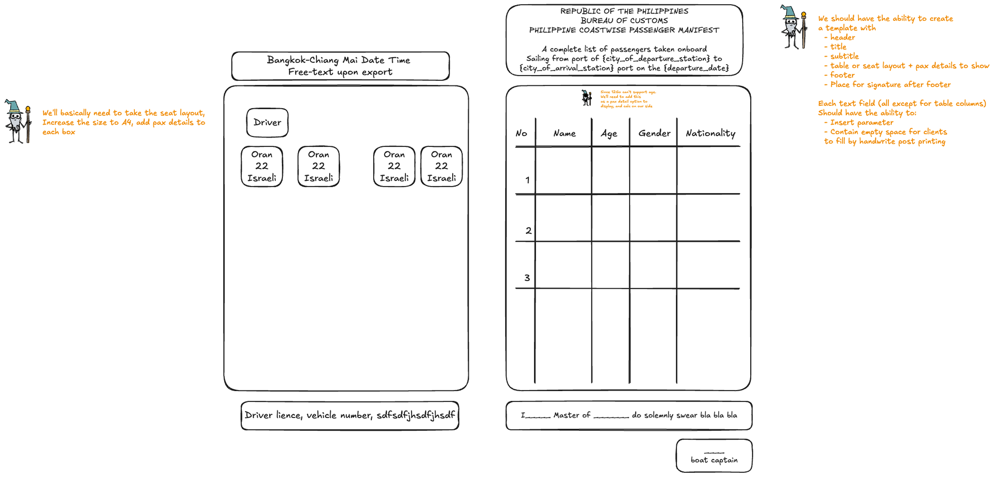

Конструктор шаблонов списка пассажиров
Составление списков пассажиров вручную — одна из самых устойчивых ежедневных рутин в пассажирских перевозках. Я автоматизировала генерацию готовых к печати списков из живых данных бронирований, сократив задачу на 30–90 минут в день до одного клика.
Ежедневная бумажная работа
Каждый день сотрудники операторов пассажирских перевозок составляют списки пассажиров для рейсов — для таможни, портовых служб, водителей, для отчётности.
Наши исследования показали, что сотрудник оператора тратит от 30 до 90 минут в день на составление этих списков вручную — часто собирая данные из нескольких каналов продаж.
Это сформировало бизнес-обоснование: решение этой боли напрямую положительно влияло на одну из наших ключевых бизнес-метрик.
Типы списков и их использование
Я начала с опроса операторов, чтобы выяснить, какие данные они включают в свои списки. Я собрала образцы списков у нескольких пользователей — разные страны, разные автопарки — и разобрала, что происходит со списком после печати и где текущий процесс болит сильнее всего.
Опрос сделал одно очевидным: просто добавить команду «печать списка пассажиров» не сработает. У каждого бизнеса чуть разные требования к форме — кому-то нужны только дата и станция в шапке, другим необходимо добавить особый текст для таможни и строку для подписи. К тому же для некоторых рейсов список нужен в виде схемы посадки.
Тогда мы поняли: нужно строить конструктор шаблонов. Два типа списков — таблица и схема посадки — с гибкой настройкой полей, которую каждый бизнес адаптирует под себя.

Паттерн использования: шаблон создаётся один раз и лишь изредка редактируется потом.
Ключевые находки, определившие дизайн
- Списки должны укладываться в формат печати. Все возможные данные физически не помещались на печатной странице A4, поэтому мне нужно было определить максимально допустимый набор отображаемых полей — со встроенным ограничением, чтобы пользователи не могли случайно выбрать слишком много параметров. Отбор строился на реальных образцах списков, собранных у операторов.
- У каждой компании свои требования к форме. Заголовки, подзаголовки, футеры и строки для подписи одним операторам нужны, а другим нет — поэтому каждый блок настраивается индивидуально для каждого шаблона.
- Формат схемы посадки — самый большой вызов. Ячейки мест должны были динамически масштабироваться в зависимости от типа транспортного средства и быть протестированы так, чтобы даже самая большая схема вмещала все нужные параметры пассажиров.
- Валидный преднастроенный шаблон и инструкция. Я выделила набор параметров, присутствующих в списке каждого оператора, и сделала их значениями по умолчанию для нового шаблона. Инструкция размещена прямо на странице шаблонов — пользователи обращаются к этой фиче редко и могут забыть, как она работает.
Какую задачу выполняют пользователи
До изменений
Когда я готовлю рейс к отправлению, я хочу собрать информацию о пассажирах из всех каналов продаж и внести её в форму, чтобы передать нужную бумагу таможне, портовым службам или водителю.
После изменений
Когда я готовлю рейс к отправлению, я хочу, чтобы список пассажиров рейса генерировался из бронирований автоматически — по шаблону, который я создала один раз, — чтобы передать нужную бумагу таможне, портовым службам или водителю, не составляя её вручную.
Создание шаблона
- 1Страница создания шаблона — две кнопки: создать как Таблицу или Схему посадки
- 2Пользователь выбирает тип шаблона
- 3Пользователь задаёт название шаблона
- 4Страница редактирования шаблона — список отображаемых параметров + превью с валидными преднастроенными параметрами
- 5Пользователь настраивает шаблон — вводит заголовки, добавляет переменные
- 6Пользователь сохраняет шаблон
- 7Снова на странице шаблонов — созданный шаблон теперь в списке
Использование шаблона
- 1Из списка рейсов пользователь выбирает шаблон для печати списка пассажиров — система собирает все параметры автоматически
Проверка концепции
В нашей дизайн-системе не было компонентов для конструктора такого рода. Вместо того чтобы документировать гипотезу, я вайб-кодила рабочий прототип (Lovable) — и чтобы дать инженерам что-то конкретное, и чтобы показать пользователям кликабельный конструктор в течение нескольких дней.
Мы протестировали его с пятью лояльными менеджерами операторов. Сессии подтвердили концепцию и вскрыли требования, которые не поймало ни одно интервью:
Дизайн и PRD параллельно
Дизайн и PRD писались бок о бок: я делала первую итерацию, обсуждала её с PM, и мы вместе уточняли спецификацию и флоу — каждый раунд подтягивал и дизайн, и инженерную задачу.
У проекта есть дизайн-система, синхронизированная с фронтендом. Я не создаю новые компоненты для кнопок или меню — я переиспользую существующие. Поведение компонентов задокументировано и для дизайнеров, и для инженеров, поэтому нет нужды плодить экраны только чтобы показать состояния компонента. Все крайние случаи были покрыты в документации.

Попробуйте конструктор шаблонов
Переключайте текстовые блоки и столбцы таблицы слева — превью списка A4 обновляется вживую, а шрифт автоматически подгоняется по мере добавления столбцов. Вставляйте переменные рейса в заголовок, подзаголовок и футер. Превью заполнено демонстрационными данными пассажиров.
Через месяц
Обратная связь была единодушно позитивной; каждый последующий запрос был про расширение фичи — новые поля, новые форматы — а не про исправления. Это тот результат, на который надеется фича 0→1: следующий разговор о том, чтобы добавить больше, а не сделать лучше.